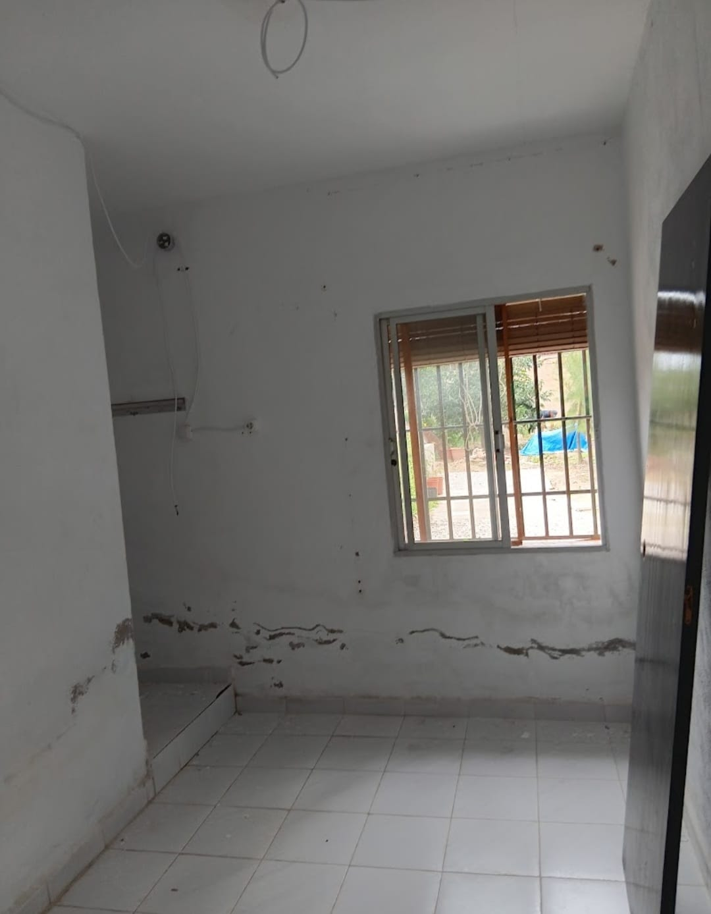
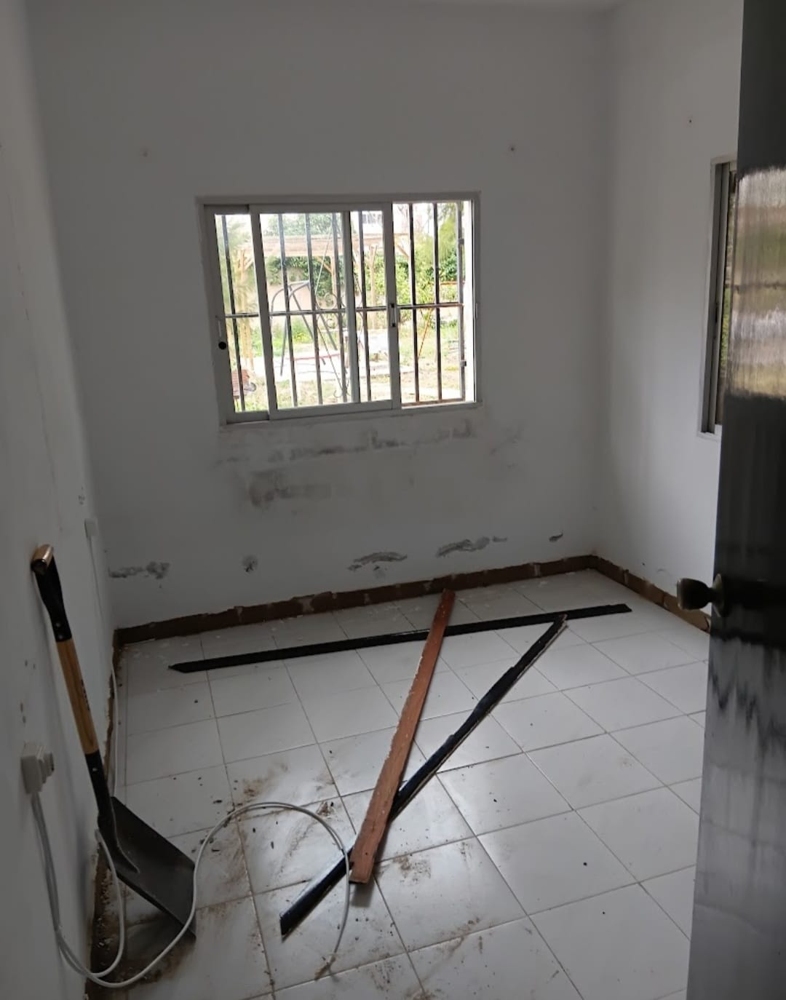
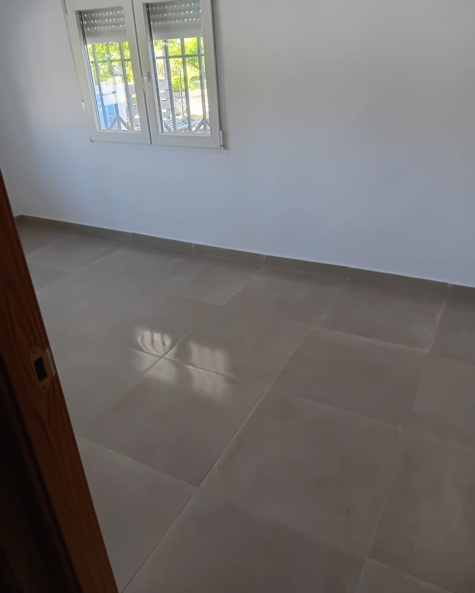
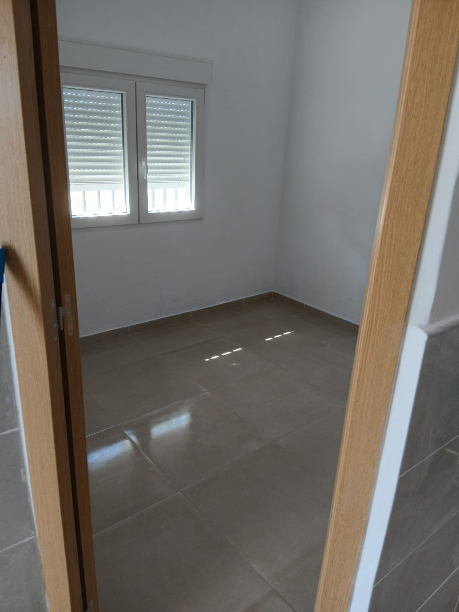
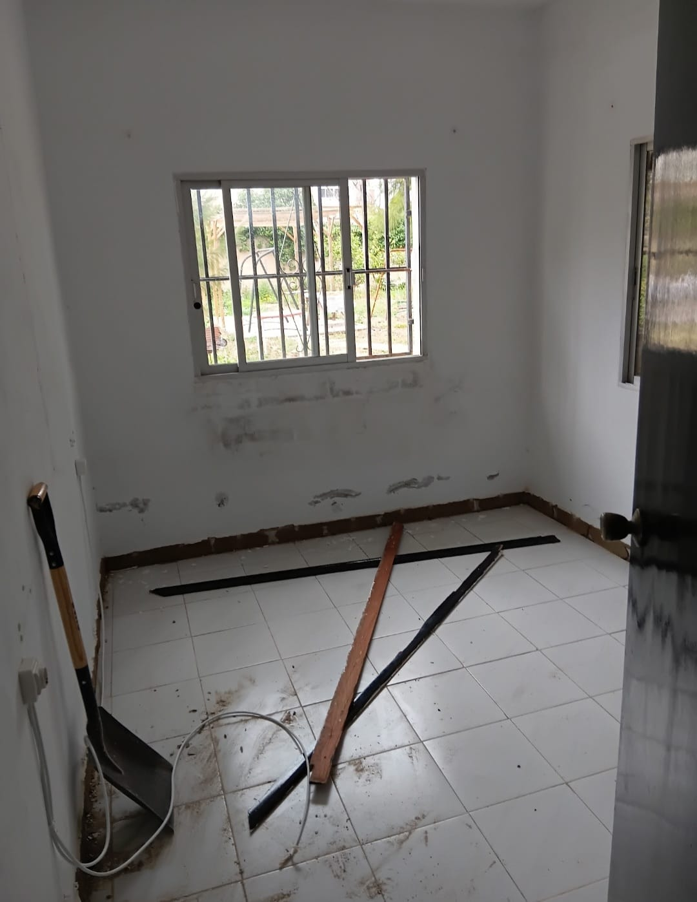
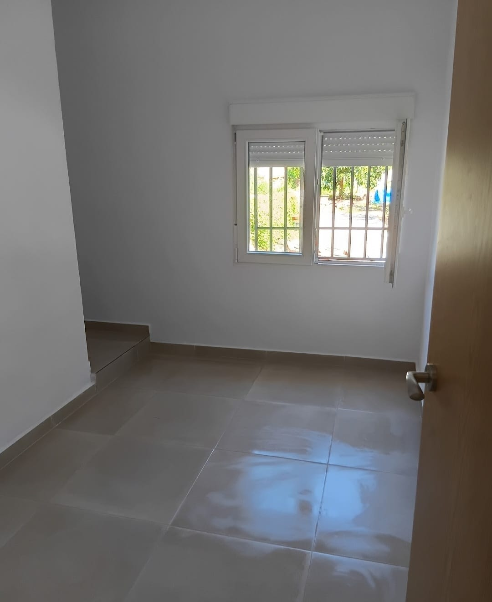
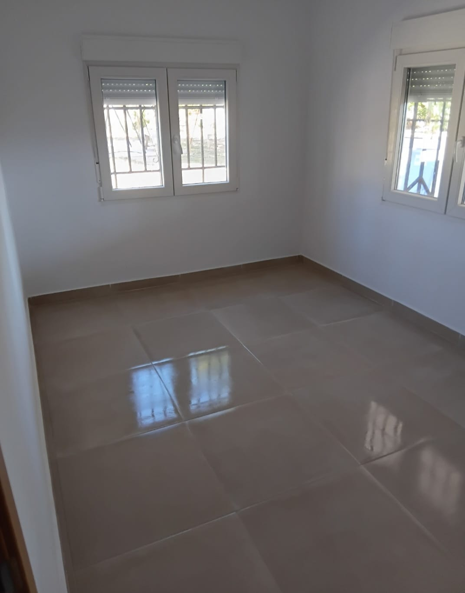
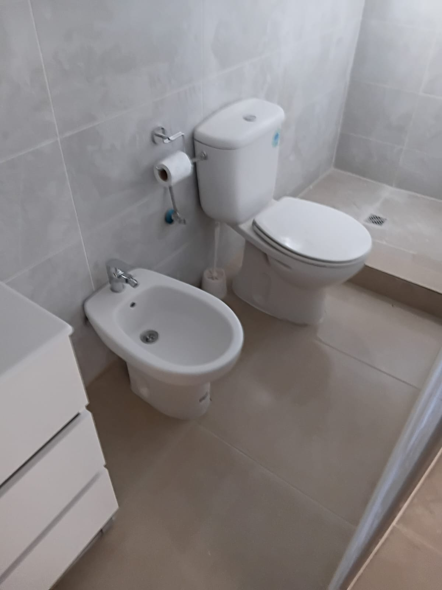
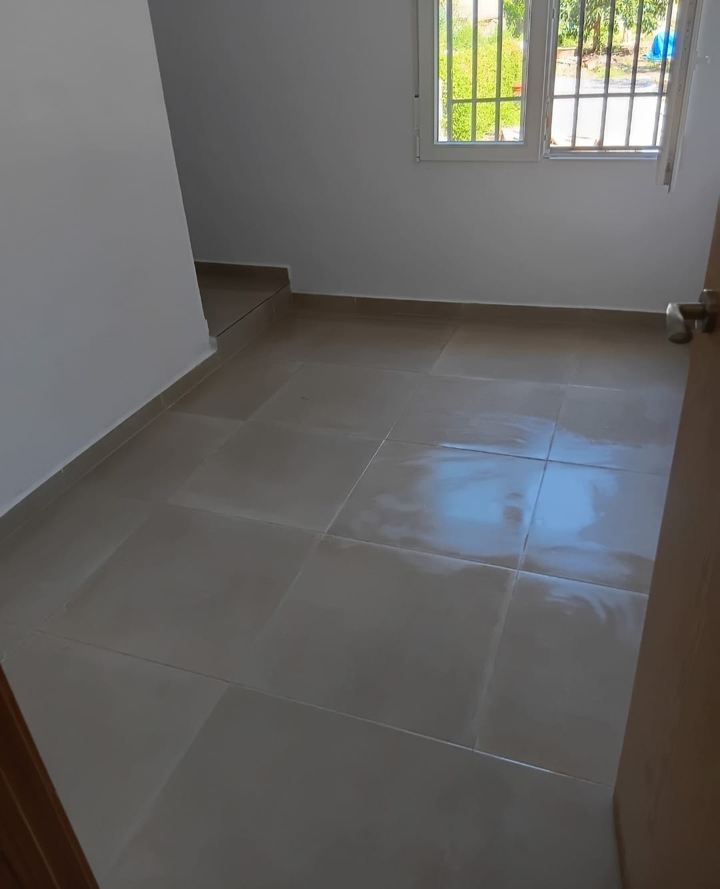
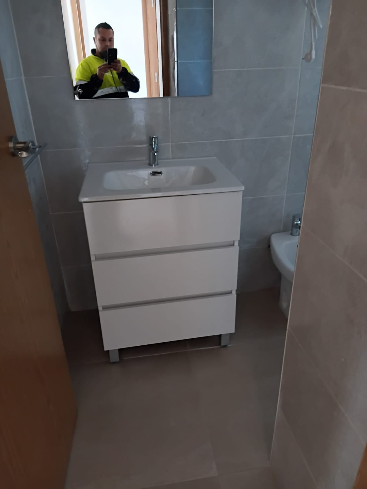

Esta casa de Alginet tiene más de cien años y llevaba muchísimo tiempo completamente desocupada. El propietario la compró como una oportunidad, una finca de casi dos mil metros cuadrados que adquirió a muy buen precio, pero que por dentro pedía a gritos una intervención a fondo. Al entrar, el cuarto de baño pequeño daba pena: el alicatado antiguo estaba prácticamente suelto por culpa de una humedad terrible acumulada durante décadas. No había por dónde salvar aquel alicatado; si le ponías la mano encima, se caían las baldosas solas.
CRÓNICA DE OBRA REAL
Alginet · Casa Centenaria · 12 Fotos de Obra
Resucitar una Casa de Pueblo Centenaria: La Gran Transformación de Alginet
Por Fabio Toro · Oficial Maestro de Albañilería · Maestros de la Construcción
Haz clic sobre cualquier fotografía para verla a pantalla completa en alta resolución
 1. Baño Demolido hasta el Bloque
Ampliar foto
1. Baño Demolido hasta el Bloque
Ampliar foto
Demolición radical: El alicatado viejo estaba totalmente desprendido por la humedad. Picamos paramentos y suelo hasta el bloque de construcción.

2. Humedades en Habitaciones Ampliar foto
Paredes afectadas: Las cuatro habitaciones presentaban eflorescencias salinas y carpinterías de madera carcomidas por el tiempo.
Lo que hicimos fue demoler todo para volver a levantarlo desde cero. En el baño saneamos el suelo, cambiamos las tuberías y picamos las paredes hasta la fábrica resistente para aplicar mortero hidrófugo maestreado. Además, le cambiamos la ventana que da justo al lado de la ducha por una nueva de aluminio con rotura de puente térmico y cristal Climalit, evitando que el frío y el vapor arruinaran de nuevo el paramento. Cuando empezamos a alicatar, usamos cuñas tensoras para que cada azulejo quedase a ras y sin cejas.

3. Paredes Aplomadas y Maestreadas Ampliar foto
Pegado de paredes: Recrecido hidrófugo y colocación del nuevo azulejo sobre paramento completamente recto y seco.

4. Nivelación con Cuñas en Baño Ampliar foto
Ajuste milimétrico: Sistema de calzos y cuñas para asegurar que las juntas queden perfectas y sin ningún resalte al tacto.
En la parte de las habitaciones nos encontramos con un suelo de terrazo viejo con desniveles. El cliente no tenía mucho presupuesto y quería un suelo resistente y económico que funcionara bien en toda la casa. En vez de ponernos a demoler el forjado con martillos neumáticos —lo que habría disparado los costes y debilitado la estructura—, hicimos un procedimiento técnico de rayado mecánico profundo sobre el terrazo, le aplicamos una imprimación de puente de unión de resina epoxi de agarre químico y solamos directamente encima con un gres porcelánico que eligió el propio cliente.
 5. Cuñas Verdes en Suelo
Ampliar foto
5. Cuñas Verdes en Suelo
Ampliar foto
Solado técnico: Colocación con cemento cola flexible C2TE y cuñas autonivelantes verdes en todas las juntas.

6. Nivelación Continua Ampliar foto
Maestreado de cotas: Ajuste milimétrico de alturas entre habitaciones para eliminar cualquier escalón interior.

7. Salida a la Calle Ampliar foto
Replanteo de cortes: Trazado de escuadras maestras para que la baldosa fluya limpia hacia la puerta exterior.
En total fueron cuatro dormitorios grandes, salón comedor y distribuidores. Hicimos pintura general en todas las paredes tras sanear los desconchados, instalamos ventanas nuevas de doble acristalamiento y pulimos las juntas de todo el pavimento. Dejar la obra completamente limpia, sin manchas de mortero ni polvo residual en las esquinas, es lo que marca la diferencia entre un remate mediocre y un trabajo de maestro albañil.

8. Habitación Terminada con Climalit Ampliar foto
Dormitorio limpio: Paredes en blanco puro, suelo continuo impecable y nueva ventana de aluminio térmico instalada.

9. Entrega de Habitaciones Ampliar foto
Espacio habitable: Una estancia que estaba deteriorada por la humedad, convertida en un dormitorio luminoso y acogedor.
En el baño demolido, aquel pequeño rincón que vimos al principio totalmente picado, terminamos montando los sanitarios con paciencia: le hice un lavado a fondo al inodoro para sanearlo y dejarlo como nuevo, y montamos un mueble de lavabo que los propietarios trajeron expresamente para el mueble de lavabo. Le conectamos la grifería, el espejo retroiluminado y sellamos todo el perímetro con masilla fungicida. En la foto del espejo podéis verme a mí comprobando que el agua corriera bien y que todo quedase operativo al cien por cien.

10. Montaje de Sanitarios Ampliar foto
Sanitarios operativos: Inodoro y bidé instalados sobre suelo nivelado con tomas de fontanería saneadas.

11. Encuentros de Azulejo Ampliar foto
Remates de precisión: Juntas limpias e impermeabilizadas alrededor de las tomas y esquinas del baño.

12. Mueble y Fabio en el Reflejo Ampliar foto
Comprobación final: Montaje del mueble de lavabo con lavabo, espejo iluminado y el maestro Fabio revisando los acabados.
¿Tienes una casa de pueblo o finca antigua en la Ribera o Valencia?
Saneamos humedades desde el origen, nivelamos suelos y ejecutamos reformas integrales respetando la solidez de tu vivienda con materiales duraderos y trato directo.